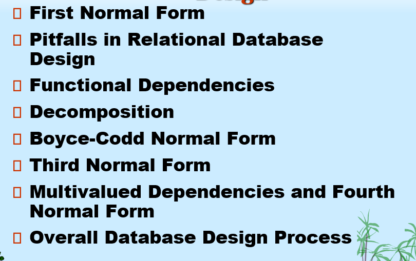
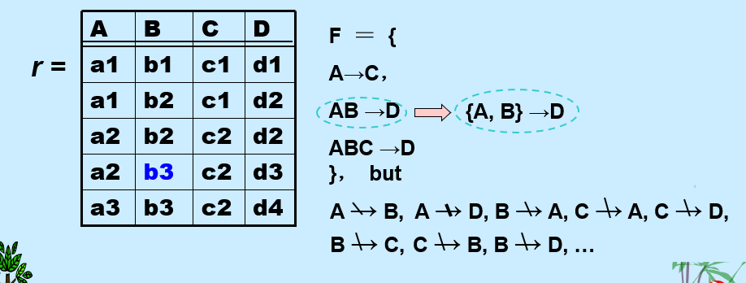
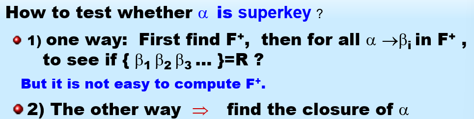
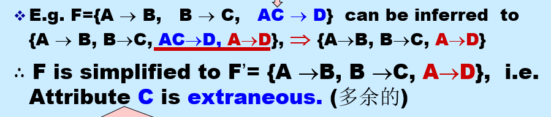
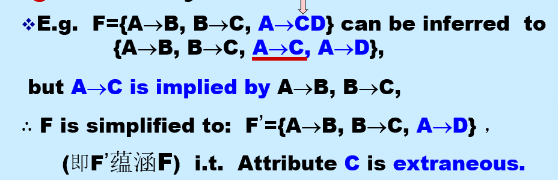
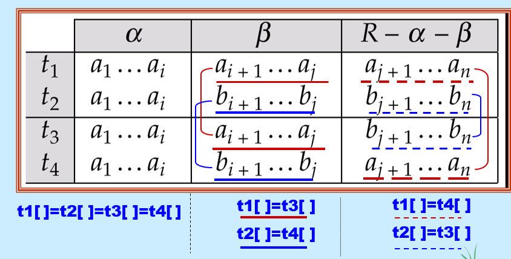

Relational Database Design

1. First Normal Form 第一范式
如果域的元素被认为是不可分割的单位，则该域是 原子的。
- 非原子域的例子：
- 复合属性 - 姓名集合
- 多值属性 - 一个人的电话号码
- 复杂数据类型 - 面向对象
如果关系模式 R 的所有属性的域都是 原子的，则称该关系模式 R 属于 第一范式 (1NF)。
对于关系数据库，要求所有关系都必须满足 1NF。
怎样处理非原子性值:
- 对于复合属性: 使用多个属性
- 对于多值属性:
- 使用多个字段, 即在一个表中预留多个列
- 使用独立的表: 创建一个新的关系表, 专门用来存储这个多值属性
- 使用单个字段: 在一个字段中使用分隔符把多个值拼在一起
坚持使用非原子数据的缺点:
- 使存储变得复杂
- 导致数据冗余
- 查询变得复杂
原子性实际上是域中元素如何使用的一种属性
- 例如：字符串通常被认为是不可分割的
- 假设分配给学生的学号是形式为 CS0012 或 EE1127 的字符串
- 如果提取前两个字符来确定系别，那么学号的域就不是原子的。
- 这样做是个坏主意： 会导致信息编码在 应用程序 中，而不是在数据库中。
2. Pitfalls in Relational Database Design 关系数据库设计中的陷阱
糟糕的设计可能导致: 数据冗余, 插入 删除 修改异常
Decomposition 分解
主要的精炼技术: 分解 $$ R = R_1 \cup R_2 $$ 无损连接分解:
目标 — 为以下内容设计一个理论
-
判断特定关系 R 是否处于“好”的形式。 -无冗余
-
如果关系 R不处于“好”的形式，将其分解为一组关系 {R1,R2,...,Rn}使得
- 每个关系都处于好形式
-
该分解是无损连接分解
-
我们的理论基于：
-
函数依赖 (functional dependencies)
- 多值依赖 (multivalued dependencies)
3. Functional Dependencies 函数依赖
3.1. Definition
函数依赖: 一种完整性约束, 表示特定属性值之间的关系, 可用于判断模式规范化并提出改进建议
借用了数学上的函数概念\(x \rightarrow f(x)\)
函数依赖是键概念的推广
- 对于关系模式 R, 若 K 是一个超键, 当且仅当 K --> R, 即K确定时, R一定能够确定
- 若K 是一个候选键, 当且仅当:
- K --> R
- 没有 K 的子集\(\alpha\) , 使得 \(\alpha\) --> R
函数依赖 可以表达出使用超键无法表达的完整性约束
函数依赖的作用:
- 在给定函数依赖集合 F 下, 测试关系是否是合法的
-
如果关系r是合法的, 称作r satisfies F

-
通过函数依赖, 为关系集(schema)指明完整性约束
-
F 在 R 上成立(F holds on R), 如果R上的所有合法关系\(r_s\)都满足函数依赖集合F
-
容易判别一个r是否满足给定的F; 但是不易判别F是否在R上成立, 不能仅由某个r推断出F; R上的函数依赖F, 通常由定义R的语义决定
平凡依赖(trivial) 与 非平凡依赖(non-trivial):
- 如果一个函数依赖满足所有关系, 则它是平凡的(trival)
- 例如 \(A\rightarrow A\)
- 一般的, 如果\(\beta \subseteq \alpha\), 则\(\alpha \rightarrow \beta\) 是平凡的; 否则, 它是不平凡的
3.2. Closure of a Set of Functional Dependencies 函数依赖集的闭包
给定函数依赖集合 F, 存在其它一些由 F 逻辑蕴含 的函数依赖
- 例如, 给定\(A \rightarrow B and B\rightarrow C\), 则可以推断出\(A \rightarrow C\)
定义: 所有由F 逻辑蕴含的函数依赖集合, 称为F 的闭包, 记作\(F^+\)
- 例如
F={A→B,B→C}
那么
F+={A→B,B→C,A→C,A→A,AB→A,AB→B,AC→C,A→BC,...}
Armstron's Axioms(公理):
-
这个公理提供了寻找\(F^+\)的参考规则
-
公理内容:
-
reflexivity 自反律: 若 \(\beta \subseteq \alpha\), 则 \(\alpha \rightarrow \beta\) ---- 平凡的
-
augmentation 增补律: 若\(\alpha \rightarrow \beta\), 则\(\gamma\alpha\rightarrow\gamma\beta\), \(\gamma\alpha\rightarrow\beta\)
-
transitivity 传递律: 若\(\alpha \rightarrow \beta\), 并且 \(\beta\rightarrow\gamma\), 那么\(\alpha\rightarrow\gamma\)
-
这些公理是: sound(保真的), complete(完备的)
-
补充定律: 为了简化计算可以使用这些附加规则
-
If \(\alpha \rightarrow \beta\) and \(\alpha \rightarrow \gamma\) holds, then \(\alpha \rightarrow \beta\gamma\) holds (union, 合并律)
- If \(\alpha \rightarrow \beta\gamma\) holds, then \(\alpha \rightarrow \beta\) and \(\alpha \rightarrow \gamma\) holds (decomposition, 分解律)
-
If \(\alpha \rightarrow \beta\) and \(\gamma\beta \rightarrow \delta\) holds, then \(\alpha\gamma \rightarrow \delta\) holds (pseudotransitivity, 伪传递律)
-
对于 n 个属性, 可能的最大函数依赖数量是\(2^n \times 2^n\)
3.3. Closure of Attribute Sets 属性集的闭包

定义: 对于给定属性集\(\alpha\), 在F下由\(\alpha\)所直接或间接函数决定的属性集合称为\(\alpha^+\)
- 测试\(\alpha \rightarrow \beta\)在\(F^+\)中, \(\Leftrightarrow\) \(\beta\subseteq\alpha^+\)
- 测试\(\alpha\)是一个超键: \(\alpha\rightarrow R\)在\(F^+\)中 \(\Leftrightarrow\) \(R\subseteq \alpha^+\)
属性闭包的使用:
- 测试超键
- 测试函数依赖
- 计算函数依赖集闭包
3.4. Canonical Cover 正则覆盖
DBMS 应该始终检查以确保不违反 F 中的任何函数依赖(FD); 但是若 F 太大, 检查成本很高, 因此我们需要简化函数依赖集
F 的规范覆盖(记作\(F_c\)) 是一个 与F等价的最小函数依赖集
- 没有冗余的FD, 且没有冗余的FD部分, 即不包含任何外来属性
外来属性 (Extraneous Attribute)： 指一个函数依赖 \(X \to Y\) 中，如果移除 \(X\) 中的某个属性 \(A\)（变成 \(X - \{A\}\)），或者移除 \(Y\) 中的某个属性 \(B\)（变成 \(Y - \{B\}\)），且移除后所得到的函数依赖仍然可以从原始函数依赖集推导出来，那么 \(A\) 或 \(B\) 就是外来属性。规范覆盖要求左侧和右侧都没有这样的外来属性。
形式化表示: \(F' = (F-\{\alpha\rightarrow \beta\})\cup\{(\alpha-A)\rightarrow\beta\}\), 其中F'与F等价, 即说明A是α中的外来属性
- 每个函数依赖的左侧是唯一的
得到 \(F_c\) \(\Rightarrow\) 删除多余属性
-
对多余属性有三种情况:
-
函数依赖集可能包含冗余依赖, 这些依赖可以从其它依赖中推断出来
-
部分函数依赖的左侧可能是冗余的 \(\Rightarrow\) 外来属性

-
部分函数依赖的右侧可能是冗余的

4. Decomposition 分解
4.1. 规范化的目标
判断一个特定的关系R是否是好的形式: 没有冗余, 插入 删除 更新 无异常
将不是好形式的关系 R, 分解为一组关系{R1, R2, ..., Rn}, 使得:
- 无损连接分解
- 依赖保持
- 每个关系Ri 是好的形式
4.2 分解应有的特性
- 原关系模式R中的所有属性, 必须在分解中出现, 即 \(R = R_1 \cup R_2\)
- 无损分解
- 无损分解当且仅当, \(F^+\)中至少满足以下依赖中的一个: \(\{R_1\cap R_2\}\rightarrow R_1\) 或者 \(\{R_1\cap R_2\}\rightarrow R_2\)
-
这个条件意味着, 分解后的两个子模式, 必须共享一个足够强的属性集, 使得这个共享属性集能够唯一确定其中一个子模式的所有属性
-
Dependency preservation 依赖保持
- 为了高效的检查更新(以确保不违反任何FD), 允许在子关系 Ri 中分别进行更新验证, 无需它们的连接操作
- F 对 Ri 的限制是: \(F_i \subseteq F^+\), 其中\(F_i\)是\(F^+\)中只包含\(R_i\)中属性的依赖集合
-
\((F_1 \cup F_2 \cup ... \cup F_n)^+ = F^+\)
-
无冗余: 关系Ri最好处于BCNF 或 3NF
5. Boyee-Codd Normal Form
关系模式是基础，它定义了可以存储的数据结构。函数依赖集是对这种数据结构的约束。BCNF 则是衡量这种数据结构在满足约束的情况下，是否存在冗余和异常的一个“质量标准”。
定义: 一个处于BCNF中的关系模式 R, 对于函数依赖集F来说, 如果对于\(F^+\)中所有形如\(\alpha \rightarrow \beta\)的函数依赖, 以下条件至少有一个成立:
- \(\alpha \rightarrow \beta\)是平凡的
- \(\alpha\) 是 R 的超键
任何两个属性的关系范式都处于BCNF
可以在F下判别R是否违反BCNF, 但必须在F+下判别R的分解式是否违反BCNF
不能总是满足所有三个设计目标:
- 无损链接
- BCNF
- 依赖保持
BCNF 分解算法:
主循环: 遍历查找result集合中每一个关系模式Ri, 检查是否满足BCNF条件
- 若找到一个Ri:
1. 选择一个违规依赖 α -> β
2. 将其分解为 Rnew1 = α ∪ β
Rnew2 = (Ri - β) ∪ α
6. Third Normal Form: Motivation
存在一些情况:
- 分解为BCNF不保持依赖
- 但是高效地检查更新时的FD违规很重要
\(\Rightarrow\)定义一个较弱的范式, 称为第三范式
- 允许一些冗余
- 但函数依赖可以在单个关系上检查, 无需计算连接
- 总是存在一个无损链接, 依赖保持的3NF分解
定义: 处于第三范式的关系 R, 对于所有的F+中的 \(\alpha \rightarrow \beta\), 至少满足下面的一个:
- \(\alpha \rightarrow \beta\)是平凡的
- \(\alpha\)是R的超键
- \(\beta - \alpha\)中的每个属性A都包含在R的某个候选键中 \(\Rightarrow\) 为主属性
- 这是 3NF 相对于BCNF 放松的关键条件, 是对BCNF的最小化放松, 以确保依赖保持
若一个关系处于BCNF, 那么它也处于3NF
测试是否满足 3NF:
- 只需要检查F中的FDs, 不需要检查F+中的所有FD
- 对于每组依赖, 使用属性闭包检查α是否是超键
- 若α不是一个超键, 验证β中的每个属性是否是R中候选键的部分属性
- 这个检查是相当昂贵的, 因为涉及到寻找候选键
- 已经被证实是一个NP-hard问题
3NF 分解算法
result初始为空
1. 计算F的规范覆盖Fc
2. 为Fc中的每一个函数依赖, 检查是否有模式已经包含了α∪β
-- 检查是否需要为当前依赖新建一个关系模式, 若已经有了就不需要了, 避免冗余
3. 若没有: 创建新的关系模式, Ri = α∪β
4. 若目前已经创建的所有模式都不包含R中的任何一个候选键, 创建Ri = 任意一个候选键
-- 确保无损连接
7. Mutivalued Dependencies 多值依赖
对于 classes(course, teacher, book), 其处于BCNF, 但是由于 teacher 和 book 是多值属性, 所以可能会导致冗余 与 插入异常
所以最好将其分解为 teaches(course, teacher) , book (course, book)
多值依赖 定义: 对于关系模式 R , \(\alpha,\beta \subseteq R\), 若 存在多值依赖 \(\alpha\rightarrow\rightarrow \beta\):
- 对于
α的任何一个特定值（比如 "数据库" 课程），它所关联的β值（比如 "Avi" 老师和 "Hank" 老师） - 和它所关联的
Z值（比如 "DB Concepts" 和 "DB System (Ullman)" 两本书）是完全独立的。 - 这意味着什么？ 这意味着
α的每一个值所对应的β的每一个值，都必须和α的每一个值所对应的Z的每一个值组合出现。
表格表示:

若\(\beta\subseteq\alpha\) 或者 \(\alpha\cup\beta = R\), 那么多值依赖是平凡的
若将关系 R 分为 Y Z W 三个部分, 若\(Y\rightarrow\rightarrow Z\), 那么 \(Y\rightarrow\rightarrow W\)
若\(\alpha\rightarrow\beta\), 那么\(\alpha\rightarrow\rightarrow \beta\)
依赖集D的关系闭包D+, 是由 D 逻辑蕴含的函数依赖 与 多值依赖的集合
7.1 第四范式
对于处于第四范式的关系模式 R ,若对于D+中的所有多值依赖\(\alpha\rightarrow\rightarrow\beta\), 至少满足一点:
- 这个依赖是平凡的
- α是R的超键
若 关系处于 第四范式, 那么它处于BCNF
7.2 分解的要求
-
假设关系 R 被分解成 R₁, R₂, ..., Rₙ，并且每个 Rᵢ 都需要符合 4NF
-
D 对 Rᵢ 的限制（Dᵢ）是由以下依赖组成的集合：
- D⁺ 中所有只包含 Rᵢ 属性的函数依赖
- 形式为 α →→ (β ∩ Rᵢ) 的所有多值依赖, 其中 α 是 Rᵢ 的子集，并且 α →→ β 在 D⁺ 中
7.3 4NF 分解算法
主循环:
- 若找到一个不符合4NF的关系模式,且α∩β为空(为了确保无损连接), 执行分解步骤
- 将Ri分解为 (α, β) 与 (Ri - β)
8 Overall Database Design Process 数据库设计过程
我们假设关系模式 R 已给定:
- R 可能是通过将 E-R 图转换为一组表时生成的
- R 可能是一个包含所有相关属性的单一关系（称为通用关系）
-
规范化将 R 分解成更小的关系
-
R 可能是某些临时（ad hoc）关系设计的结果，我们随后对其进行测试/转换为范式
E-R图 和 规范化
-
当 E-R 图经过精心设计，** **正确识别了所有实体时，从 E-R 图生成的表应该不需要进一步规范化
-
然而，在实际（不完美）的设计中，实体中非键属性之间可能存在函数
-
关系集（relationship set）中非键属性的函数依赖(非键属性决定了实体中另一个非键属性)是可能的，但很少见 --- 大多数关系是二元的
通用关系方法
Dangling tuples 无归属元组: 在计算 join 时 "消失"的元组
关系 r₁ ⋈ r₂ ⋈ ... ⋈ rₙ 被称为通用关系，因为它包含了由 R₁ ∪ R₂ ∪ ... ∪ Rₙ 定义的“宇宙”中的所有属性